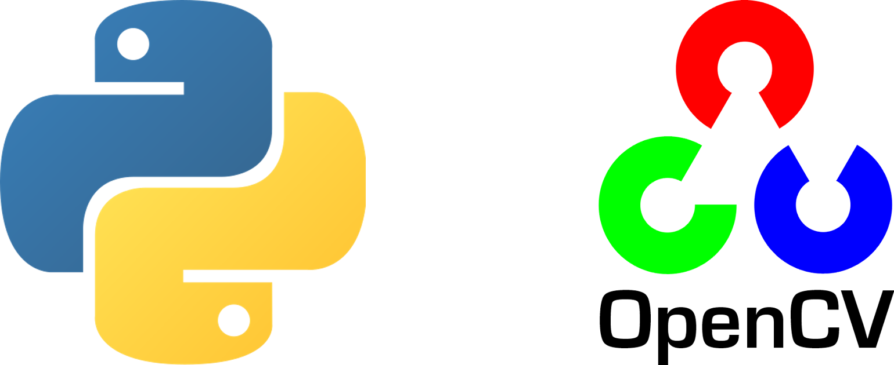

I'm 23 and based in Turkey. I am a developer passionate about software
and production.
I quickly learn and apply new technologies,
libraries and methods. I worked in Machine Learning, Spider bots,
Backend Development.
Currently, I am a freelancer as a Backend and Electronics Developer and
part of Backend Development and Machine Learning Teams
at ARMA Group Holding since 2021.


